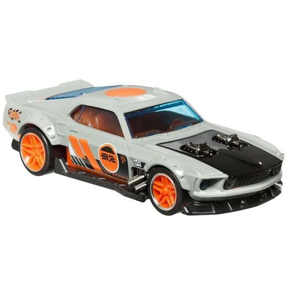

Bem-vindo à nossa loja de Hot Wells! Aqui você encontrará uma variedade de produtos para atender às suas necessidades e desejos seja para colecionar ou presentear.
Catálogo de Carros
CNeon Surpresa
R$ 150,00

Dodge Viper em azul metálico
R$ 120,00

Dodge Viper SRT 2013
R$ 200,00

Dodge Viper Srt10 Acr Serie Mopar
R$ 90,00
Loose Carros Americanos Branco
R$ 150,00

Dodge Viper RT/10 Yellow 2017
R$ 120,00
'68 Mustang - Super T-Hunt - FKB39
R$ 200,00

T1968 Mustang DTX47
R$ 90,00

Tekli Araba 68' Mustang GTC21
R$ 150,00
2002 negro 1968 Ford Mustang
R$ 120,00

SPEEDERS - 1969 FORD MUSTANG
R$ 200,00
Gulf Fiat 500D Modificado '60s
R$ 90,00